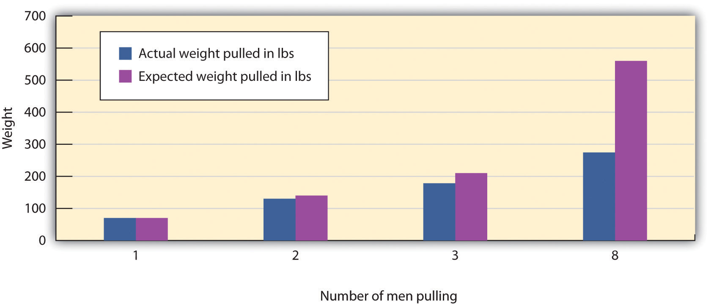

Just as our primitive ancestors lived together in small social groups, including families, tribes, and clans, people today still spend a great deal of time in groups. We study together in study groups, we work together on production lines, and we decide the fates of others in courtroom juries. We work in groups because groups can be beneficial. A rock band that is writing a new song or a surgical team in the middle of a complex operation may coordinate their efforts so well that it is clear that the same outcome could never have occurred if the individuals had worked alone. But group performance will only be better than individual performance to the extent that the group members are motivated to meet the group goals, effectively share information, and efficiently coordinate their efforts. Because these things do not always happen, group performance is almost never as good as we would expect, given the number of individuals in the group, and may even in some cases be inferior to that which could have been made by one or more members of the group working alone.
In an early social psychological study, Norman Triplett (1898)Triplett, N. (1898). The dynamogenic factors in pacemaking and competition. American Journal of Psychology, 9(4), 507–533. found that bicycle racers who were competing with other bicyclers on the same track rode significantly faster than bicyclers who were racing alone, against the clock. This led Triplett to hypothesize that people perform tasks better when there are other people present than they do when they are alone. Subsequent findings validated Triplett’s results, and experiments have shown that the presence of others can increase performance on many types of tasks, including jogging, shooting pool, lifting weights, and solving problems (Bond & Titus, 1983).Bond, C. F., & Titus, L. J. (1983). Social facilitation: A meta-analysis of 241 studies. Psychological Bulletin, 94(2), 265–292. The tendency to perform tasks better or faster in the presence of others is known as social facilitationThe tendency to perform tasks better or faster in the presence of others..
However, although people sometimes perform better when they are in groups than they do alone, the situation is not that simple. Perhaps you remember an experience when you performed a task (playing the piano, shooting basketball free throws, giving a public presentation) very well alone but poorly with, or in front of, others. Thus it seems that the conclusion that being with others increases performance cannot be entirely true. The tendency to perform tasks more poorly or more slowly in the presence of others is known as social inhibitionThe tendency to perform tasks more poorly or more slowly in the presence of others..
Robert Zajonc (1965)Zajonc, R. B. (1965). Social facilitation. Science, 149, 269–274. explained the observed influence of others on task performance using the concept of physiological arousal. According to Zajonc, when we are with others we experience more arousal than we do when we are alone, and this arousal increases the likelihood that we will perform the dominant response, the action that we are most likely to emit in any given situation (Figure 14.15 "Drive-Arousal Model of Social Facilitation").
Figure 14.15 Drive-Arousal Model of Social Facilitation

The most important aspect of Zajonc’s theory was that the experience of arousal and the resulting increase in the occurrence of the dominant response could be used to predict whether the presence of others would produce social facilitation or social inhibition. Zajonc argued that when the task to be performed was relatively easy, or if the individual had learned to perform the task very well (a task such as pedaling a bicycle), the dominant response was likely to be the correct response, and the increase in arousal caused by the presence of others would create social facilitation. On the other hand, when the task was difficult or not well learned (a task such as giving a speech in front of others), the dominant response is likely to be the incorrect one, and thus, because the increase in arousal increases the occurrence of the (incorrect) dominant response, performance is hindered.
A great deal of experimental research has now confirmed these predictions. A meta-analysis by Bond and Titus (1983),Bond, C. F., & Titus, L. J. (1983). Social facilitation: A meta-analysis of 241 studies. Psychological Bulletin, 94(2), 265–292. which looked at the results of over 200 studies using over 20,000 research participants, found that the presence of others significantly increased the rate of performing on simple tasks, and also decreased both rate and quality of performance on complex tasks.
Although the arousal model proposed by Zajonc is perhaps the most elegant, other explanations have also been proposed to account for social facilitation and social inhibition. One modification argues that we are particularly influenced by others when we perceive that the others are evaluating us or competing with us (Baron, 1986).Baron, R. (1986). Distraction/conflict theory: Progress and problems. In L. Berkowitz (Ed.), Advances in experimental social psychology (Vol. 19). New York, NY: Academic Press. In one study supporting this idea, Strube, Miles, and Finch (1981)Strube, M. J., Miles, M. E., & Finch, W. H. (1981). The social facilitation of a simple task: Field tests of alternative explanations. Personality & Social Psychology Bulletin, 7(4), 701–707. found that the presence of spectators increased joggers’ speed only when the spectators were facing the joggers, so that the spectators could see the joggers and assess their performance. The presence of others did not influence joggers’ performance when the joggers were facing in the other direction and thus could not see them.
The ability of a group to perform well is determined by the characteristics of the group members (e.g., are they knowledgeable and skilled?) as well as by the group process—that is, the events that occur while the group is working on the task. When the outcome of group performance is better than we would expect given the individuals who form the group, we call the outcome a group process gain, and when the group outcome is worse than we would have expected given the individuals who form the group, we call the outcome a group process loss.
One group process loss that may occur in groups is that the group members may engage in social loafingA group process loss that occurs when people do not work as hard in a group as they do when they are working alone., a group process loss that occurs when people do not work as hard in a group as they do when they are working alone. In one of the earliest social psychology experiments, Ringelmann (1913; reported in Kravitz & Martin, 1986)Kravitz, D. A., & Martin, B. (1986). Ringelmann rediscovered: The original article. Journal of Personality and Social Psychology, 50, 936–941. had individual men, as well as groups of various numbers of men, pull as hard as they could on ropes while he measured the maximum amount that they were able to pull. As you can see in Figure 14.16 "Group Process Loss", although larger groups pulled harder than any one individual, Ringelmann also found a substantial process loss. In fact, the loss was so large that groups of three men pulled at only 85% of their expected capability, whereas groups of eight pulled at only 37% of their expected capability. This type of process loss, in which group productivity decreases as the size of the group increases, has been found to occur on a wide variety of tasks.
Figure 14.16 Group Process Loss
Ringlemann found that although more men pulled harder on a rope than fewer men did, there was a substantial process loss in comparison to what would have been expected on the basis of their individual performances.
Group process losses can also occur when group members conform to each other rather than expressing their own divergent ideas. GroupthinkAn outcome that occurs when a group, as a result of a flawed group process and strong conformity pressures, makes a very poor decision. is a phenomenon that occurs when a group made up of members who may be very competent and thus quite capable of making excellent decisions nevertheless ends up, as a result of a flawed group process and strong conformity pressures, making a poor decision (Baron, 2005; Janis, 2007).Baron, R. S. (2005). So right it’s wrong: Groupthink and the ubiquitous nature of polarized group decision making. In M. P. Zanna (Ed.), Advances in experimental social psychology (Vol. 37, pp. 219–253). San Diego, CA: Elsevier Academic Press; Janis, I. L. (2007). Groupthink. In R. P. Vecchio (Ed.), Leadership: Understanding the dynamics of power and influence in organizations (2nd ed., pp. 157–169). Notre Dame, IN: University of Notre Dame Press. Groupthink is more likely to occur in groups whose members feel a strong group identity, when there is a strong and directive leader, and when the group needs to make an important decision quickly. The problem is that groups suffering from groupthink become unwilling to seek out or discuss discrepant or unsettling information about the topic at hand, and the group members do not express contradictory opinions. Because the group members are afraid to express opinions that contradict those of the leader, or to bring in outsiders who have other information, the group is prevented from making a fully informed decision. Figure 14.17 "Causes and Outcomes of Groupthink" summarizes the basic causes and outcomes of groupthink.
Figure 14.17 Causes and Outcomes of Groupthink

It has been suggested that groupthink was involved in a number of well-known and important, but very poor, decisions made by government and business groups, including the decision to invade Iraq made by President Bush and his advisors in 2002, the crashes of two Space Shuttle missions in 1986 and 2003, and the decision of President John Kennedy and his advisors to commit U.S. forces to help invade Cuba and overthrow Fidel Castro in 1962. Analyses of the decision-making processes in these cases have documented the role of conformity pressures.
As a result of the high levels of conformity in these groups, the group begins to see itself as extremely valuable and important, highly capable of making high-quality decisions, and invulnerable. The group members begin to feel that they are superior and do not need to seek outside information. Such a situation is conducive to terrible decision-making and resulting fiascoes.
Although many other countries rely on judges to make judgments in civil and criminal trials, the jury is the foundation of the legal system in the United States. The notion of a “trial by one’s peers” is based on the assumption that average individuals can make informed and fair decisions when they work together in groups. But given the potential for group process losses, are juries really the best way to approach these important decisions?
As a small working group, juries have the potential to produce either good or poor decisions, depending on the outcome of the characteristics of the individual members as well as the group process. In terms of individual group characteristics, people who have already served on juries are more likely to be seen as experts, are more likely to be chosen to be the jury foreman, and give more input during the deliberation. It has also been found that status matters; jury members with higher status occupations and education, males rather than females, and those who talk first are more likely be chosen as the foreman, and these individuals also contribute more to the jury discussion (Stasser, Kerr, & Bray, 1982).Stasser, G., Kerr, N. L., & Bray, R. M. (1982). The social psychology of jury deliberations: Structure, process and product. In N. L. Kerr & R. M. Bray (Eds.), The psychology of the courtroom (pp. 221–256). New York, NY: Academic Press.
However, although at least some member characteristics have an influence on jury decision making, group process plays a more important role in the outcome of jury decisions than do member characteristics. Like any group, juries develop their own individual norms, and these norms can have a profound impact on how they reach their decision. Analysis of group process within juries shows that different juries take very different approaches to reaching a verdict. Some spend a lot of time in initial planning, whereas others immediately jump into the deliberation. Some juries base their discussion around a review and reorganization of the evidence, waiting to make a vote until it has all been considered, whereas other juries first determine which decision is preferred in the group by taking a poll and then (if the first vote does not lead to a final verdict) organize their discussion around these opinions. These two approaches are used quite equally but may in some cases lead to different decisions (Davis, Stasson, Ono, & Zimmerman, 1988).Davis, J. H., Stasson, M. F., Ono, K., & Zimmerman, S. (1988). Effects of straw polls on group decision making: Sequential voting pattern, timing, and local majorities. Journal of Personality & Social Psychology, 55(6), 918–926.
Perhaps most importantly, conformity pressures have a strong impact on jury decision making. As you can see in Figure 14.18 "Results From Stasser, Kerr, and Bray, 1982", when there are a greater number of jury members who hold the majority position, it becomes more and more certain that their opinion will prevail during the discussion. This does not mean that minorities can never be persuasive, but it is very difficult for them to do so. The strong influence of the majority is probably due to both informational conformity (i.e., that there are more arguments supporting the favored position) and normative conformity (the people on the majority side have greater social influence).
Figure 14.18 Results From Stasser, Kerr, and Bray, 1982

This figure shows the decisions of 6-member mock juries that made “majority rules” decisions. When the majority of the 6 initially favored voting guilty, the jury almost always voted guilty; when the majority of the 6 initially favored voting innocent, the jury almost always voted innocent. The juries were frequently hung (could not make a decision) when the initial split was 3–3.
Source: Adapted from Stasser, G., Kerr, N. L., & Bray, R. M. (1982). The social psychology of jury deliberations: Structure, process and product. In N. L. Kerr & R. M. Bray (Eds.), The psychology of the courtroom (pp. 221–256). New York, NY: Academic Press.
Given the potential difficulties that groups face in making good decisions, you might be worried that the verdicts rendered by juries may not be particularly effective, accurate, or fair. However, despite these concerns, the evidence suggests that juries may not do as badly as we would expect. The deliberation process seems to cancel out many individual juror biases, and the importance of the decision leads the jury members to carefully consider the evidence itself.
Taken together, working in groups has both positive and negative outcomes. On the positive side, it makes sense to use groups to make decisions because people can create outcomes working together that any one individual could not hope to accomplish alone. In addition, once a group makes a decision, the group will normally find it easier to get other people to implement it, because many people feel that decisions made by groups are fairer than are those made by individuals.
Yet groups frequently succumb to process losses, leading them to be less effective than they should be. Furthermore, group members often don’t realize that the process losses are occurring around them. For instance, people who participate in brainstorming groups report that they have been more productive than those who work alone, even if the group has actually not done that well (Nijstad, Stroebe, Lodewijkx, 2006; Stroebe, Diehl, & Abakoumkin, 1992).Nijstad, B. A., Stroebe, W., & Lodewijkx, H. F. M. (2006). The illusion of group productivity: A reduction of failures explanation. European Journal of Social Psychology, 36(1), 31–48; Stroebe, W., Diehl, M., & Abakoumkin, G. (1992). The illusion of group effectivity. Personality & Social Psychology Bulletin, 18(5), 643–650. The tendency for group members to overvalue the productivity of the groups they work in is known as the illusion of group productivityThe tendency to overvalue the productivity of group in comparison to individual performance., and it seems to occur for several reasons. For one, the productivity of the group as a whole is highly accessible, and this productivity generally seems quite good, at least in comparison to the contributions of single individuals. The group members hear many ideas expressed by themselves and the other group members, and this gives the impression that the group is doing very well, even if objectively it is not. And, on the affective side, group members receive a lot of positive social identity from their group memberships. These positive feelings naturally lead them to believe that the group is strong and performing well.
What we need to do, then, is to recognize both the strengths and limitations of group performance and use whatever techniques we can to increase process gains and reduce process losses. Table 14.5 "Techniques That Can Be Used to Improve Group Performance" presents some of the techniques that are known to help groups achieve their goals.
Table 14.5 Techniques That Can Be Used to Improve Group Performance
| Technique | Example |
|---|---|
| Provide rewards for performance. | Rewarding employees and team members with bonuses will increase their effort toward the group goal. People will also work harder in groups when they feel that they are contributing to the group goal than when they feel that their contributions are not important. |
| Keep group member contributions identifiable. | Group members will work harder if they feel that their contributions to the group are known and potentially seen positively by the other group members than they will if their contributions are summed into the group total and thus unknown (Szymanski & Harkins, 1987). |
| Maintain distributive justice (equity). | Workers who feel that their rewards are proportional to their efforts in the group will be happier and work harder than will workers who feel that they are underpaid (Geurts, Buunk, & Schaufeli, 1994). |
| Keep groups small. | Larger groups are more likely to suffer from coordination problems and social loafing. The most effective working groups are of relatively small size—about four or five members. |
| Create positive group norms. | Group performance is increased when the group members care about the ability of the group to do a good job (e.g., a cohesive sports or military team). On the other hand, some groups develop norms that prohibit members from working to their full potential and thus encourage loafing. |
| Improve information sharing. | Leaders must work to be sure that each member of the group is encouraged to present the information that he or she has in group discussions. One approach to increasing full discussion of the issues is to have the group break up into smaller subgroups for discussion. |
| Allow plenty of time. | Groups take longer to reach consensus, and allowing plenty of time will help keep the group from coming to premature consensus and making an unwise choice. Time to consider the issues fully also allows the group to gain new knowledge by seeking information and analysis from outside experts. |
| Set specific and attainable goals. | Groups that set specific, difficult, yet attainable goals (e.g., “improve sales by 10% over the next 6 months”) are more effective than groups that are given goals that are not very clear (e.g., “let’s sell as much as we can!”; Locke & Latham, 2006). |
Sources: Szymanski, K., & Harkins, S. G. (1987). Social loafing and self-evaluation with a social standard. Journal of Personality & Social Psychology, 53(5), 891–897; Geurts, S. A., Buunk, B. P., & Schaufeli, W. B. (1994). Social comparisons and absenteeism: A structural modeling approach. Journal of Applied Social Psychology, 24(21), 1871–1890; Locke, E. A., & Latham, G. P. (2006). New directions in goal-setting theory. Current Directions in Psychological Science, 15(5), 265–268.